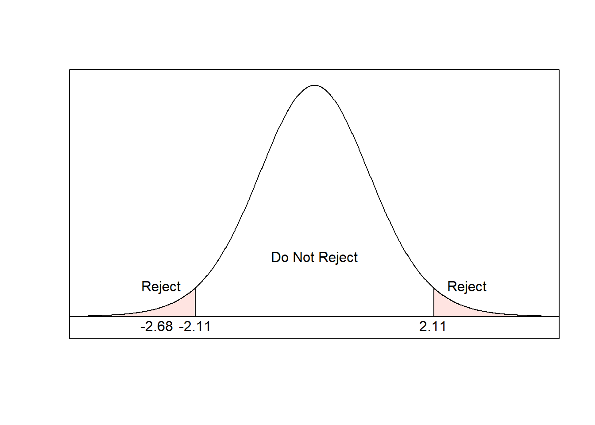

Module 9 Inference: Comparing Parameters
In this module, we extend the concepts from Module 6 to answer questions like “is there a difference between these means?” We will also consider hypothesis tests for whether a sample represents the population or closely matches a particular distribution.
Module Learning Outcomes/Objectives
- Perform and interpret inference for
- the difference of two proportions.
- paired data and two sample means.
R Objectives
- Generate hypothesis tests for the difference of two proportions.
- Generate hypothesis tests for the difference of two means.
- Interpret R output for tests of two proportions and two means.
This module’s outcomes correspond to course outcomes (6) apply statistical inference techniques of parameter estimation such as point estimation and confidence interval estimation and (7) apply techniques of testing various statistical hypotheses concerning population parameters.
9.1 Hypothesis Tests for Two Proportions
Sometimes, we might like to compare two proportions. We do this by looking at their difference: \(p_1 - p_2\). This is going to be fairly similar to the tests we used for a single proportion. Let \(n_1\) be the sample size for the first group and \(p_1\) the proportion for the first group. Similarly, let \(n_2\) be the sample size for the second group and \(p_2\) the proportion for the second group.
Conditions:
- Independence within and between groups (generally satisfied if the data are from random samples or a randomized experiment).
- We need \(n_1p_1 > 10\) and \(n_1(1-p_1)>10\) and \(n_2p_2 > 10\) and \(n_2(1-p_2)>10\)
- Recall that \(np\) is the number of successes and \(n(1-p)\) is the number of failures, so we can also check if both groups have at least 10 successes and at least 10 failures.
If these conditions are satisfied, the standard error is \[\sqrt{\frac{p_1(1-p_1)}{n_1} + \frac{p_2(1-p_2)}{n_2}}\] and we can calculate confidence intervals and perform hypothesis tests on \(p_1 - p_2\).
9.1.1 Confidence Intervals for Two Proportions
A \(100(1-\alpha)\%\) confidence interval for \(p_1-p_2\) is
\[\hat{p_1} - \hat{p_2} \pm z_{\alpha/2} \times \sqrt{\frac{\hat{p_1}(1-\hat{p_1})}{n_1} + \frac{\hat{p_2}(1-\hat{p_2})}{n_2}}\]
Example: Last semester, a professor taught two sections of the same class. The first section had 30 students, 19 of whom passed. The second section had 43 students, 30 of whom passed. Find and interpret at 95% confidence interval for the difference in pass rates (proportion of students who passed) for the two sections.
Solution: First, we should note that \(n_1=30\) and \(\hat{p}_1 = 19/30 = 0.633\) and that \(n_2=43\) and \(\hat{p}_2 = 30/43 = 0.698\). For a 95% confidence interval, the critical value is \(z_{0.025} = 1.96\).
Now for the first section, there were \(19\) passes and \(30-19-11\) failures. For the second section, there were \(30\) passes and \(43-30-13\) failures. All our ``successes” and failures are at least 10, so our conditions are satisfied.
Then \[\begin{aligned} \hat{p_1} - \hat{p_2} &\pm z_{\alpha/2} \times \sqrt{\frac{\hat{p_1}(1-\hat{p_1})}{n_1} + \frac{\hat{p_2}(1-\hat{p_2})}{n_2}} \\ 0.633 - 0.698 &\pm 1.96 \sqrt{\frac{0.633(1-0.633)}{30} + \frac{0.698(1-0.698)}{43}} \\ -0.065 &\pm 1.96\sqrt{0.0126} \\ -0.065 &\pm 0.0248 \\ (-0.065-0.0248, &-0.065 + 0.0248) \\ (-0.090, & -0.040) \end{aligned}\] We can be 95% confident that the true difference in proportion of students who passed section 1 versus section 2 was between -0.09 and -0.04.
9.1.2 Critical Values, Test Statistics, and P-Values
Often, we are interested in checking whether \(p_1 = p_2\), which results in a null hypothesis of \(H_0: p_1 - p_2 = 0\) (where the null value is zero). In this case, we use a pooled proportion to estimate \(p\) in the standard error.
This pooled proportion is calculated as \[\hat{p}_{\text{pooled}} = \frac{\text{total number of successes}}{\text{total number of cases}} = \frac{\hat{p_1}n_1 + \hat{p_2}n_2}{n_1 + n_2}\] which makes the standard error in this case \[ \text{Standard Error} = \sqrt{\frac{\hat{p}_{\text{pooled}}(1-\hat{p}_{\text{pooled}})}{n_1} + \frac{\hat{p}_{\text{pooled}}(1-\hat{p}_{\text{pooled}})}{n_2}}\]
The critical value is \(z_{\alpha/2}\). The test statistic is \[\begin{aligned} z &= \frac{\hat{p_1}-\hat{p_2}}{\text{standard error}} \\ &= \frac{\hat{p_1}-\hat{p_2}}{\sqrt{\frac{\hat{p}_{\text{pooled}}(1-\hat{p}_{\text{pooled}})}{n_1} + \frac{\hat{p}_{\text{pooled}}(1-\hat{p}_{\text{pooled}})}{n_2}}} \end{aligned}\] and the p-value is \[2P(Z > |z|)\] where \(z\) is the test statistic.
Steps:
- State the null and alternative hypotheses.
- Determine the significance level \(\alpha\). Check assumptions, \(n_1p_1 > 10\) and \(n_1(1-p_1)>10\) and \(n_2p_2 > 10\) and \(n_2(1-p_2)>10\).
- Compute the value of the test statistic.
- Determine the critical value or p-value.
- Decision.
- For the critical value approach: If the test statistic is in the rejection region, reject the null hypothesis.
- For the p-value approach: If \(\text{p-value} < \alpha\), reject the null hypothesis. Otherwise, do not reject.
- Interpret results.
Example: A researcher wants to know if female dogs are more likely to bark when someone comes to the door than male dogs. He takes a random sample of 50 male and 50 female dogs and tracks whether they bark at the door. Of the male dogs, 37 barked at the door. Of the female dogs, 39 barked at the door. Test at the 0.1 level of significance whether female dogs bark at the door more often.
Solution: Let male dogs be 1 and female dogs be 2. Then from the problem statement, \(n_1=50\) and \(\hat{p}_1=37/50=0.74\), and \(n_2=50\) and \(\hat{p}_2=39/50=0.78\).
- \(H_0: p_1-p_2=0\) vs \(H_A: p_1-p_2\ne0\)
- Our level of significance is \(\alpha=0.1\). For male dogs, there were \(37\) successes and \(50-37=13\) failures; for female dogs, there were \(39\) successes and \(50-39-11\) failures. So our conditions are satisfied.
- For the test statistic, we need the pooled proportion. \[\begin{aligned} \hat{p}_{\text{pooled}} &= \frac{\text{total number of successes}}{\text{total number of cases}} \\ &= \frac{37+39}{50+50}\\ &= \frac{76}{100} \\ &= 0.76 \end{aligned}\] and the standard error is \[\begin{aligned} \text{SE} &= \sqrt{\frac{0.76(1-0.76)}{50} + \frac{0.76(1-0.76)}{50}} \\ &= \sqrt{\frac{0.1824}{50} + \frac{0.1824}{50}} \\ &= \sqrt{0.007296} \\ &= 0.085 \end{aligned}\] Then the test statistic is \[z = \frac{\hat{p_1}-\hat{p_2}}{\text{SE}} = \frac{0.74-0.78}{0.085} = -0.47 \]
- For the critical value approach, we would find \(z_{0.1/2}=1.645\). For the p-value approach, we would find \[2P(Z > |-0.47|) = 2(0.3192) = 0.6384\]
- Since the test statistic is in the rejection region (and the p-value \(=0.6384>\alpha=0.1\)), we fail to reject the null hypothesis.
- At the 0.1 level of significance, the data provide insufficient evidence to conclude that female or male dogs are more likely to bark when someone comes to the door.
Calculating the pooled standard error and test statistic can be pretty tedious! In practice, we almost always let a computer handle these types of tests.
9.2 Hypothesis Tests for Two Means
What if we wanted to compare two means? We begin by discussing paired samples. This will feel very familiar, since it’s essentially the same as hypothesis testing for a single mean. Then we will move on to independent samples, which will require a couple of adjustments.
9.2.1 Paired Samples
Sometimes there is a special correspondence between two sets of observations. We say that two sets of observations are paired if each observation has a natural connection with exactly one observation in the other data set. Consider the following data from 30 students given a pre- and post-test on a course concept:
| Student | Pre-Test | Post-Test |
|---|---|---|
| 1 | 52 | 70 |
| 2 | 71 | 98 |
| 3 | 13 | 65 |
| \(\dots\) | \(\dots\) | \(\dots\) |
| 30 | 48 | 81 |
The natural connection between “pre-test” and “post-test” is the student who took each test! Often, paired data will involve similar measures taken on the same item or individual. We pair these data because we want to compare two means, but we also want to account for the pairing.
Why? Consider: If a student got a 13% on the pre-test, I would love to see them get a 60% on the post-test - that’s a huge improvement! But if a student got an 82% on the pre-test, I would not like to see them get a 60% on the post-test. Pairing the data lets us account for this connection.
So what do we do with paired data? Fortunately, this part is easy! We start by taking the difference between the two sets of observations. In the pre- and post-test example, I will take the pre-test score and subtract the post-test score:
| Student | Pre-Test | Post-Test | Difference |
|---|---|---|---|
| 1 | 52 | 70 | 18 |
| 2 | 71 | 98 | 27 |
| 3 | 13 | 65 | 52 |
| \(\dots\) | \(\dots\) | \(\dots\) | \(\dots\) |
| 30 | 48 | 81 | 33 |
Then, we do a test of a single mean on the differences where
- \(H_0: \mu_{\text{d}} = 0\)
- \(H_A: \mu_{\text{d}} \ne 0\)
Note that the subscript “d” denotes “difference”. We will use the exact same test(s) as in the previous sections:
Large Sample Setting: \(\mu_{\text{d}}\) is target parameter, \(n_{\text{d}} \ge 30\), \[z = \frac{\bar{x}_{\text{d}}}{s_{\text{d}}/\sqrt{n_{\text{d}}}}\] and the p-value is \[2P(Z > |z|)\] where \(z\) is the test statistic.
Small Sample Setting: \(\mu_{\text{d}}\) is target parameter, \(n_{\text{d}} < 30\), \[t = \frac{\bar{x}_{\text{d}}}{s_{\text{d}}/\sqrt{n_{\text{d}}}}\] and the p-value is \[2P(t_{df} > |t|)\] where \(t\) is the test statistic.
Here, \(n_{\text{d}}\) is the number of pairs.
Steps:
- State the null and alternative hypotheses.
- Determine the significance level \(\alpha\). Check assumptions (decide which setting to use).
- Compute the value of the test statistic.
- Determine the critical values or p-value.
- For the critical value approach: If the test statistic is in the rejection region, reject the null hypothesis. For the p-value approach: If \(\text{p-value} < \alpha\), reject the null hypothesis. Otherwise, do not reject.
- Interpret results.
9.2.2 Independent Samples
In independent samples, the sample from one population does not impact the sample from the other population. In short, we take two separate samples and compare them.
- \(H_0: \mu_1 = \mu_2 \quad \rightarrow \quad H_0: \mu_1 - \mu_2 = 0\)
- \(H_A: \mu_1 \ne \mu_2 \quad \rightarrow \quad H_A: \mu_1 - \mu_2 \ne 0\)
If we use \(\bar{x}\) to estimate \(\mu\), intuitively we might use \(\bar{x}_1-\bar{x}_2\) to estimate \(\mu_1 - \mu_2\). To do this, we need to know something about the sampling distribution of \(\bar{x}_1-\bar{x}_2\).
Consider: if \(X_1\) is Normal(\(\mu_1\), \(\sigma_1\)) and \(X_2\) is Normal(\(\mu_2\),\(\sigma_2\)) with \(\sigma_1\) and \(\sigma_2\) are known, then for independent samples of size \(n_1\) and \(n_2\),
- \(\bar{X}_1-\bar{X}_2\) is Normal(\(\mu_{\bar{X}_1-\bar{X}_2}\), \(\sigma_{\bar{X}_1-\bar{X}_2}\)).
- \(\mu_{\bar{X}_1-\bar{X}_2} = \mu_1 - \mu_2\)
- \(\sigma_{\bar{X}_1-\bar{X}_2} = \sigma_1 - \sigma_2\)
so then \[Z = \frac{(\bar{X}_1 - \bar{X}_2) - (\mu_1 - \mu_2)}{\sqrt{\sigma_1/n_1 - \sigma_2/n_2}}\] has a standard normal distribution. But, as we mentioned earlier, we rarely work in that setting where the population standard deviation is known. Instead, we will use \(s_1\) and \(s_2\) to estimate \(\sigma_1\) and \(\sigma_2\). For independent samples of size \(n_1\) and \(n_2\), \[t = \frac{(\bar{X}_1 - \bar{X}_2) - (\mu_1 - \mu_2)}{\sqrt{s_1/n_1 - s_2/n_2}}\] has a t-distribution with degrees of freedom \[\Delta = \frac{[(s_1^2/n_1) + (s_2^2/n_2)]^2}{\frac{(s_1^2/n_1)^2}{n_1-1} + \frac{(s_2^2/n_2)^2}{n_2-1}}\] rounded down to the nearest whole number. (Note that \(\Delta\) is the uppercase Greek letter, “delta”.) If \(n_1 = n_2\), this simplifies to \[\Delta = (n-1)\left(\frac{(s_1^2 + s_2^2)^2}{s_1^4 + s_2^4}\right)\]
Tip: Generally, people do not calculate \(\Delta\) by hand. Instead, we use a computer to do these kinds of tests.
Assumptions:
- Simple random samples.
- Independent samples.
- Normal populations or large (\(n \ge 30\)) samples.
Steps for Critical Value Approach:
- \(H_0: \mu_1 - \mu_2 = 0\) and \(H_A: \mu_1 - \mu_2 \ne 0\)
- Check assumptions; select the significance level \(\alpha\).
- Compute the test statistic \[t = \frac{\bar{x}_1 - \bar{x}_2}{\sqrt{s_1/n_1 - s_2/n_2}}\] Note that we assume under the null hypothesis that \(\mu_1 - \mu_2 = 0\), which is why we replace this quantity with \(0\) in the test statistic.
- The critical value is \(\pm t_{df, \alpha/2}\) with \(df = \Delta\).
- If the test statistic falls in the rejection region, reject the null hypothesis.
- Interpret in the context of the problem.
Steps for P-Value Approach:
- \(H_0: \mu_1 - \mu_2 = 0\) and \(H_A: \mu_1 - \mu_2 \ne 0\)
- Check assumptions; select the significance level \(\alpha\).
- Compute the test statistic \[t = \frac{\bar{x}_1 - \bar{x}_2}{\sqrt{s_1/n_1 - s_2/n_2}}\] Note that we assume under the null hypothesis that \(\mu_1 - \mu_2 = 0\), which is why we replace this quantity with \(0\) in the test statistic.
- The p-value is \(2P(t_{df} > |t|)\) with \(df = \Delta\).
- If \(\text{p-value}<\alpha\), reject the null hypothesis.
- Interpret in the context of the problem.
Notice that the only difference between the critical value and p-value approaches are steps 4 and 5.
Example: Researchers wanted to detemine whether a dymanic or static approach would impact the time needed to complete neurosurgeries. The experiment resulted in the following data from simple random samples of patients:
Dynamic Static \(\bar{x}_1 = 394.6\) \(\bar{x}_2 = 468.3\) \(s_1 = 84.7\) \(s_2 = 38.2\) \(n_1 = 14\) \(n_2 = 6\) Times are measured in minutes. Assume \(X_1\) and \(X_2\) are reasonably normal.
- \(H_0: \mu_1 = \mu_2\) and \(H_A: \mu_1\ne\mu_2\)
- Let \(\alpha=0.05\) (this will be our default when a significance level is not given)
- We are told these are simple random samples.
- There’s no reason that time for a neurosurgery with the dynamic system would impact time for the static system (or vice versa), so it’s reasonable to assume these samples are independent.
- We are told to assume that \(X_1\) and \(X_2\) are reasonably normal.
- The test statistic is \[t = \frac{394.6-468.3}{84.7^2/14 + 38.2^2/6} = -2.681\]
- Then \[df = \Delta = \frac{(84.7^2/14) + (38.2^2/6)^2}{\frac{(84.7^2/14)^2}{14-1} + \frac{(38.2^2/6)^2}{6-1}} = 17\] when rounded down. The critical value is \[t_{17, 0.025} = 2.110\] and the p-value is \[2P(t_{17}>|-2.681|)=2(0.0079)=0.0158\]
- For the critical value approach,

Since the test statistic is in the rejection region, we reject the null hypothesis. For the p-value approach, since \(\text{p-value}=0.158 < \alpha =0.05\), reject the null hypothesis.
- At the 0.05 level of significance, the data provide sufficient evidence to conclude that the mean time for the dynamic system is less than the mean time for the static system.
We can also construct a \((1-\alpha)100\%\) confidence interval for the difference of the two population means: \[(\bar{x}_1-\bar{x}_2) \pm t_{df, \alpha/2}\sqrt{\frac{s_1^2}{n_1} + \frac{s_2^2}{n_2}}\] which we interpret as we interpret other confidence intervals, including in our interpretation that we are now considering the difference of two means.
R Lab: Comparing Parameters
Hypothesis Tests for Two Proportions
To compare two proportions, we will use the command prop.test. This is similar to binom.test, but the latter command does not allow us to compare two proportions. We will need the following arguments:
x: a listing of the numbers of successes in each of the two groups. This will take the formx = c(x1, x2).n: a listing of the numbers of trials for each group. This will take the formn = c(n1, n2).conf.level: the confidence level (\(1-\alpha\)).
Note that order matters in c(x1, x2) and c(n1, n2). Make sure to keep track of which variable you have set as 1 an which as 2. This test also assumes a null hypothesis of \(p_1 = p_2\).
This test has a few behind-the-scenes tweaks relative to what we do by hand. This means that the results might be slightly different than the results you get when running these tests by hand. That’s ok!
The sleep dataset in R contains data on two groups (10 in each) of patients given soporific drugs (drugs designed to induce sleep). We want to examine whether the proportion of patients who experienced an increase in hours of sleep differs between the two groups.
I have this set up with two variables, d1 and d2, which represent drug 1 and drug 2. Each variable is \(1\) if the patient experienced an increase in hours of sleep and \(0\) if they did not. Let’s print these out and find out how many successes were in each group.
## [1] 1 0 0 0 0 1 1 1 0 1## [1] 1 1 1 1 0 1 1 1 1 1We can find the total number of successes for each by summing the values in each variable. Let’s do that in R using the sum command:
## [1] 5## [1] 9So the numbers of successes are \(x_1 = 5\) and \(x_2 = 9\) for group sizes \(n_1 = n_2 = 10\). For the prop.test command, this will look like x = c(5, 9) and n = c(10,10). We will use an \(\alpha=0.1\) level of significance. Then
##
## 2-sample test for equality of proportions with continuity correction
##
## data: c(5, 9) out of c(10, 10)
## X-squared = 2.1429, df = 1, p-value = 0.1432
## alternative hypothesis: two.sided
## 90 percent confidence interval:
## -0.803296023 0.003296023
## sample estimates:
## prop 1 prop 2
## 0.5 0.9The output of this test is (top to bottom)
- The data provided in the input.
- A test statistic and degrees of freedom (these are part of the behind-the-scenes tweaks and you can ignore them!) along with a p-value.
- When a hypothesis test says “two sided” that means the null hypothesis represents the “not equal” condition that we work with.
- The requested confidence interval.
- The sample proportions.
Although the sample proportions appear to be different, the sample sizes are very small! Therefore it is unsurprising that the data provide insufficient evidence to conclude that the drugs differ in their ability to increase hours slept (\(p=0.143\) and the confidence interval includes \(0\)).
Hypothesis Tests for Two Means
The math has only gotten more cumbersome! Let’s use R to quickly run these types of tests without having to do any calculations by hand.
There is data built into R that shows the effect of Vitamin C on tooth growth in guinea pigs through (A) ascorbic acid or (B) orange juice. (Each guinea pig was randomly assigned to either ascorbic acid or orange juice.) We want to compare the ascorbic acid group to the orange juice group to see if one has more tooth growth than the other. This is currently in a data set called teeth, which contains two variables: aa, the tooth length for guinea pigs in the ascorbic acid group and oj the tooth length for the orange juice group.
To run a two-sample test comparing means in R, we continue to use the command t.test. The arguments we need in this case are:
x: the first variable.y: the other variable.mu: the null value, usually \(\mu_1-\mu_2=0\).paired: set this equal toTRUEfor paired t tests; set it equal toFALSEfor independent samples.conf.level: the desired confidence level (\(1-\alpha\)).
In this case, we are interested in variables x = aa and y = oj. The null value is mu = 0. Guinea pigs were randomly assigned to each treatment group, so these are independent samples and paired = FALSE. Finally, we will go ahead and test this at a 0.05 level of significance, so conf.level = 0.95. Putting that all together, the R command looks like
##
## Welch Two Sample t-test
##
## data: aa and oj
## t = -1.9153, df = 55.309, p-value = 0.06063
## alternative hypothesis: true difference in means is not equal to 0
## 95 percent confidence interval:
## -7.5710156 0.1710156
## sample estimates:
## mean of x mean of y
## 16.96333 20.66333The R output shows (top to bottom)
- variables entered.
- the test statistic, degrees of freedom, and p-value.
- the alternative hypothesis.
- a confidence interval for the difference of the two means.
- sample means for each variable.
Based on the output, at the 0.05 level of significance, the data provide insufficient evidence to conclude that the mean tooth length for guinea pigs receiving ascorbic acid differs from the guinea pigs receiving orange juice (\(p = 0.061\) and the confidence interval includes 0).